In MS Office, in Data, Select Import->from text
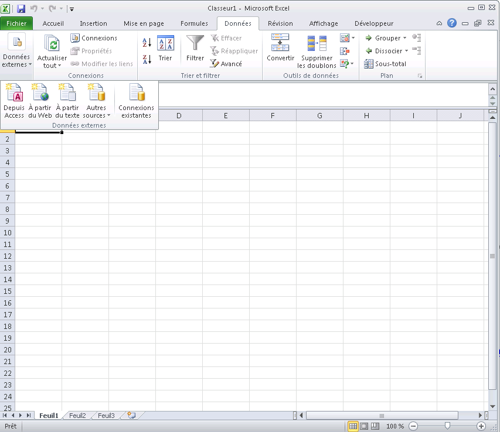Use your URL instead of a local file, you can test your request with the console plugin
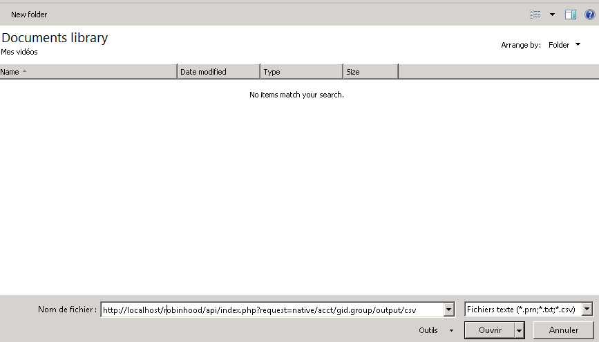Don't change anything (Delimited) , just click next
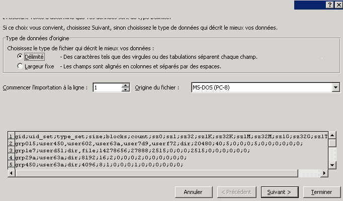Change to semi-colon , then lock on finish
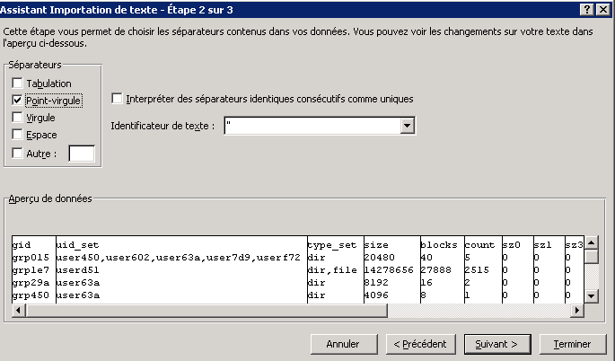Select where you want to put the data
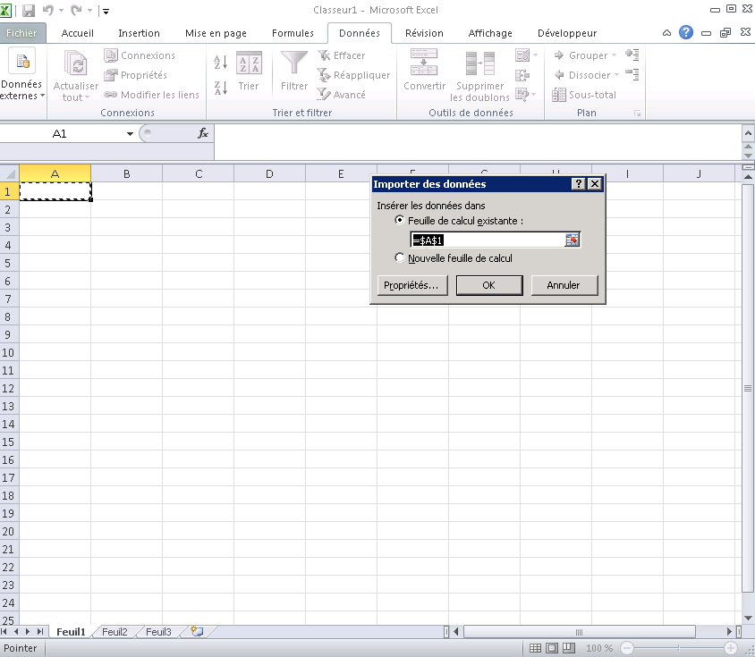In order to do a pivot table, select all your data and click on filter in data
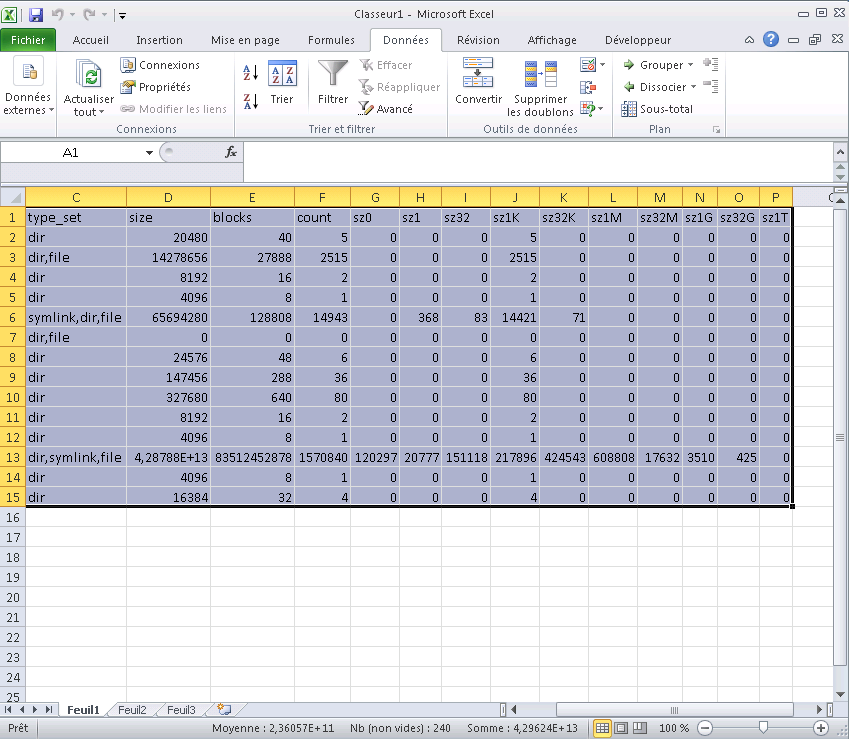 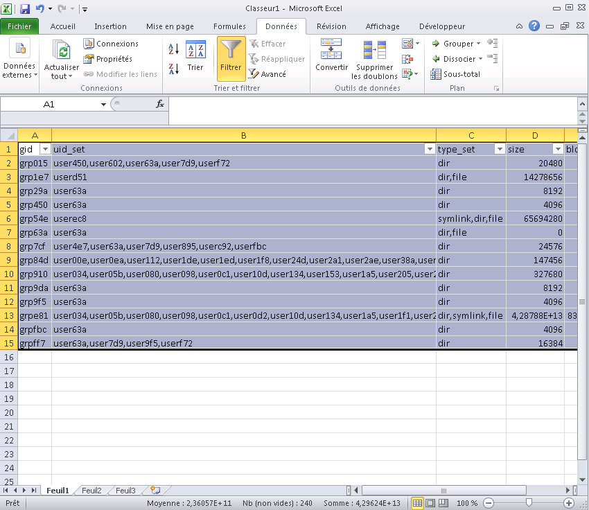To create the pivot table, in insert select pivot table
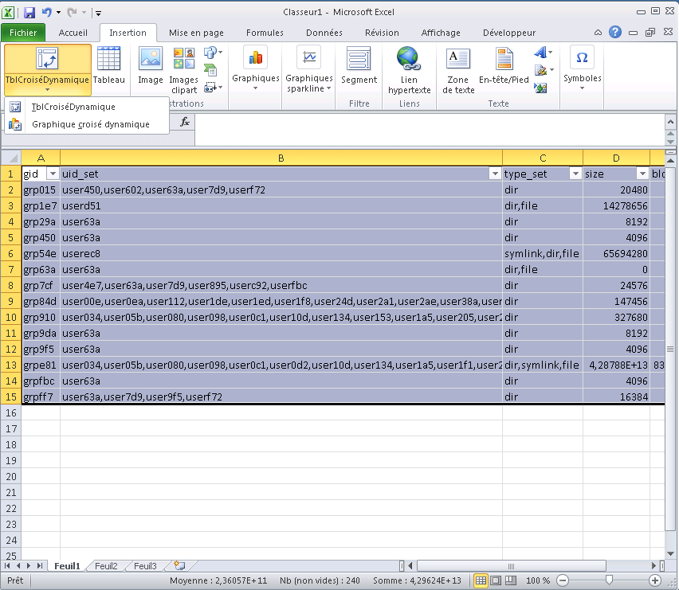let the default value to create the chart in a new sheet
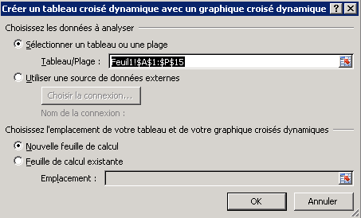Select axis and value (ex. gid and sid) and you have the size usage by group
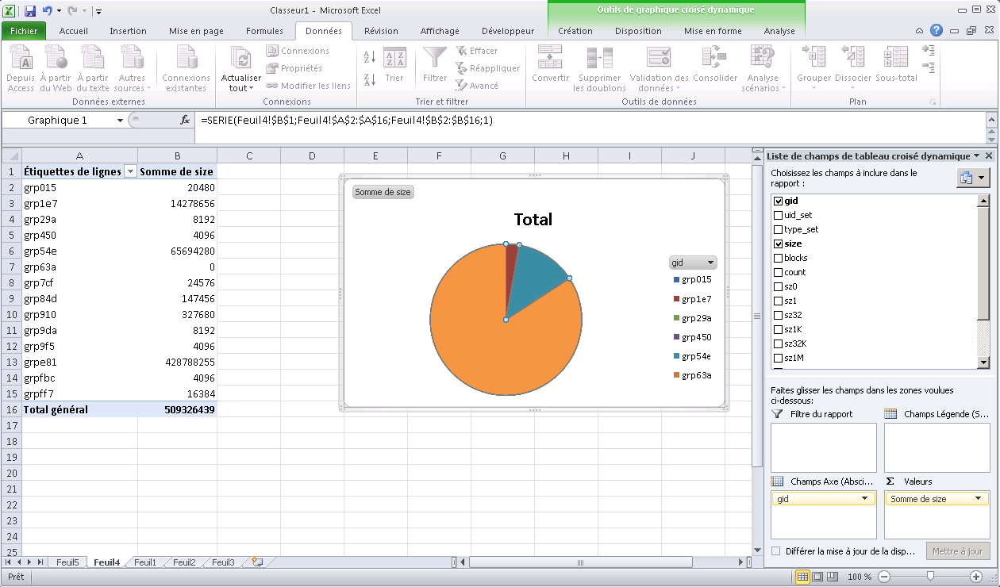 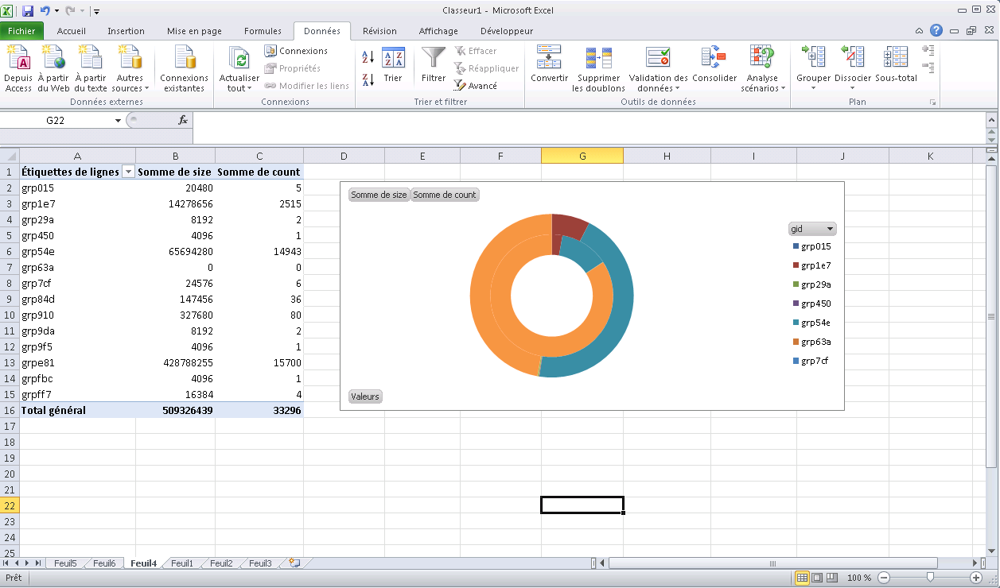